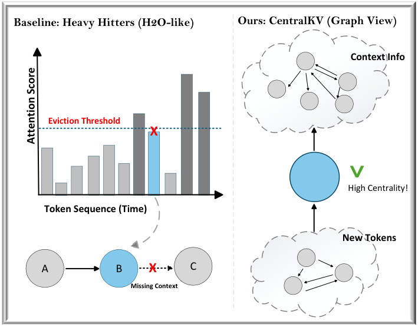
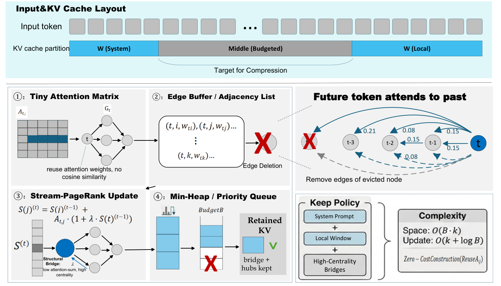
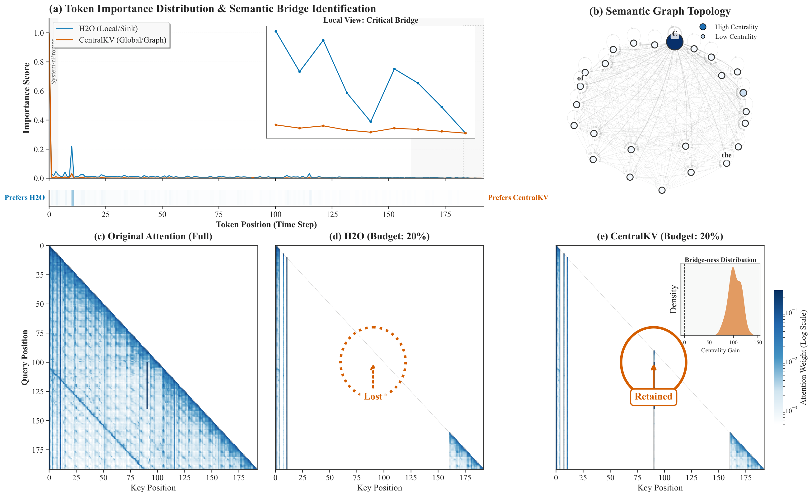
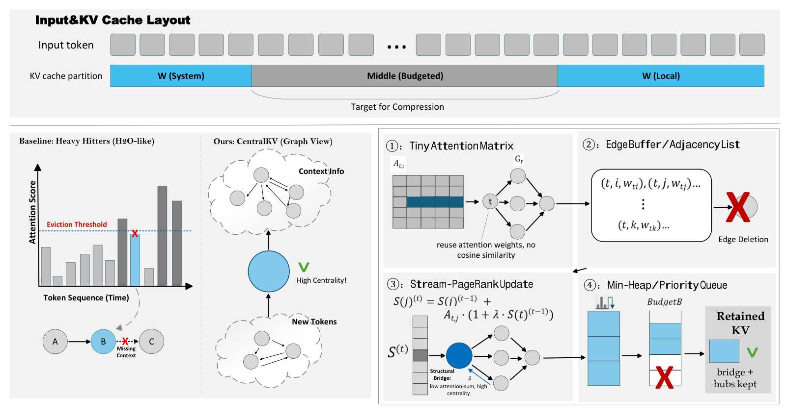
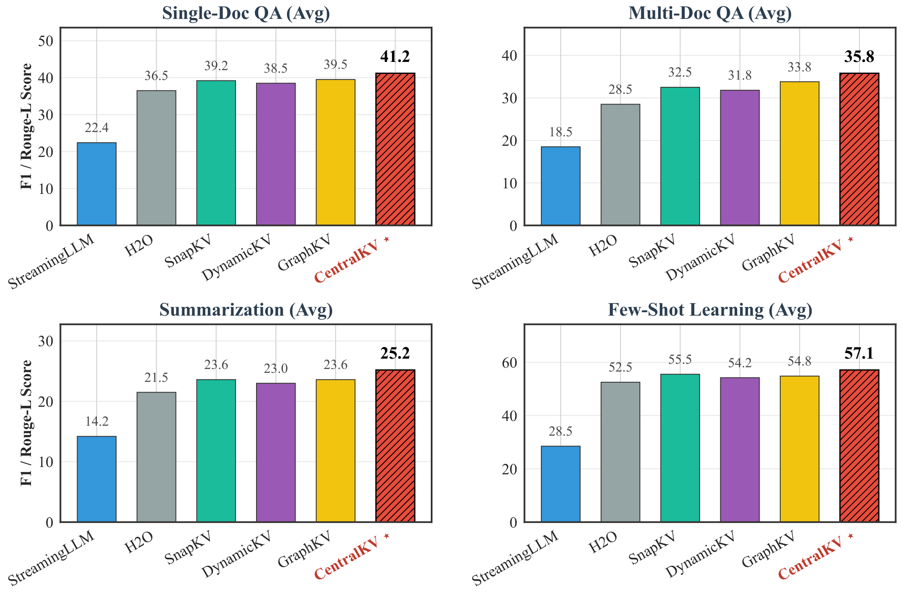
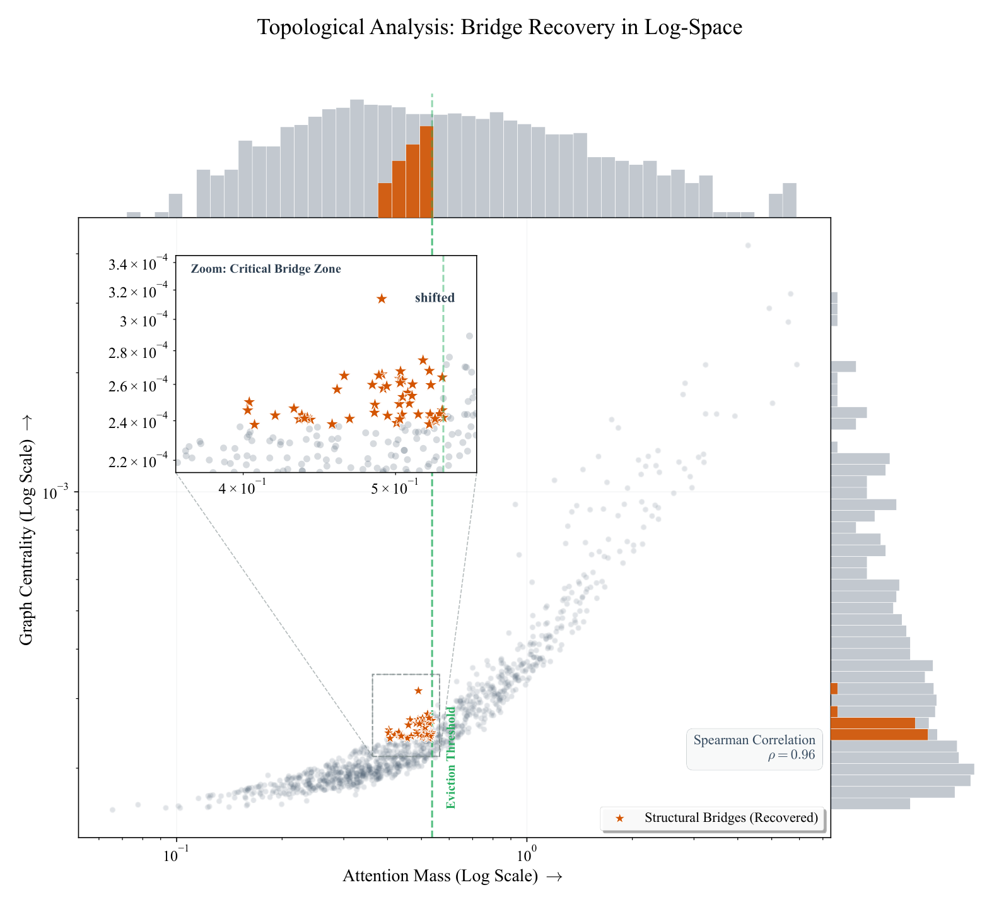
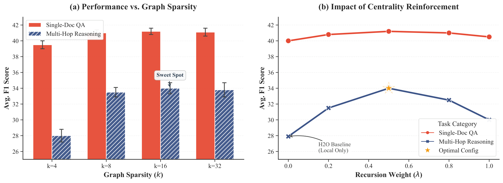
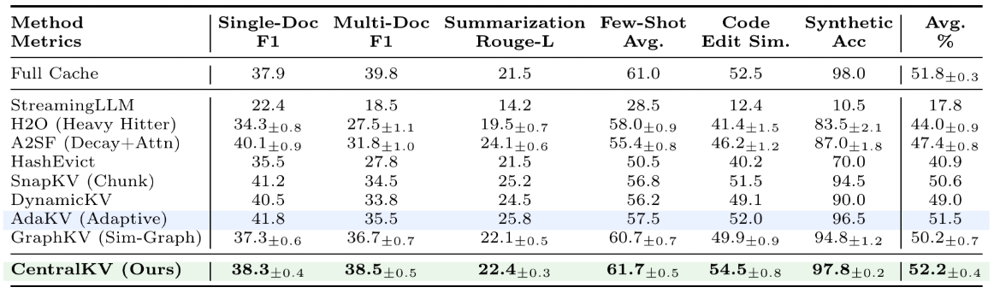
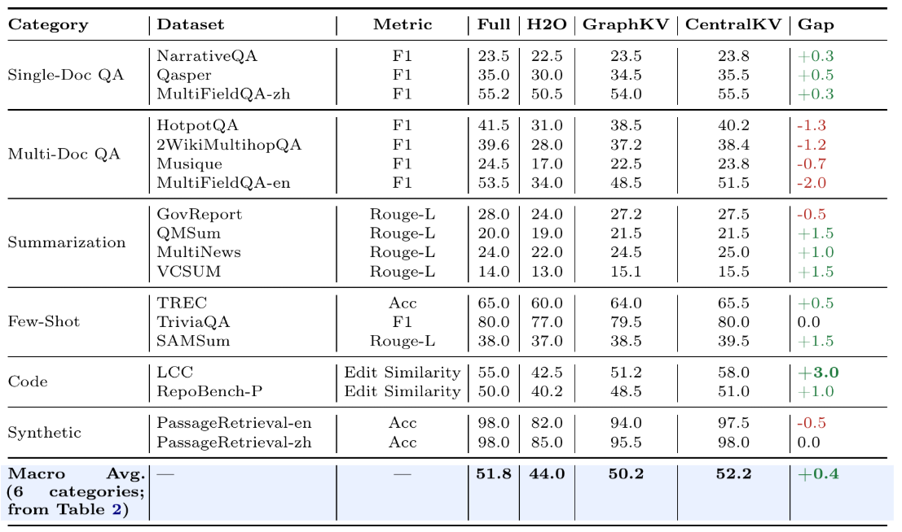
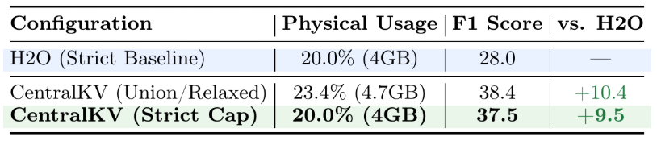

Attention as a graph
Top-k attention edges expose causal dependencies already computed during decoding, without a separate similarity graph.
A training-free framework for KV-cache compression based on a dynamic sparse causal graph.
1Fujian University of Technology · 2Durham University · 3Fujian Normal University · 4Renmin University of China · 5The University of Arizona · 6Shenzhen University · 7Loughborough University · 8Queen Mary University of London · 9Technical University of Munich · 10National University of Singapore
*First author; †Corresponding author.

Long-context inference in large language models is limited by the linear memory growth of the key-value cache. Existing eviction methods typically retain tokens with high accumulated attention or remove semantic redundancy, but may discard low-frequency tokens that connect distant dependencies. CentralKV is a training-free framework that models attention as a dynamic sparse causal graph. Its Stream-Influence algorithm updates token centrality online and preserves structurally important bridge tokens during KV compression. The attention graph is constructed directly from the attention operation without separate similarity computation. Experiments on LongBench evaluate CentralKV against H2O, SnapKV, and GraphKV under strict physical memory constraints.
Top-k attention edges expose causal dependencies already computed during decoding, without a separate similarity graph.
An online O(1) update tracks token centrality as the sequence grows.
System prompts and a recent window remain protected while low-centrality entries are evicted.
CentralKV is training-free and slots into the standard decoding loop. Its graph is sparse, causal, and updated only where new attention evidence appears.

Reuse the attention weights from the forward pass; no cosine-similarity pass is required.
Keep only the top-k causal predecessors for each new token, reducing graph complexity to O(kL).
Propagate Stream-Influence to active neighbors with a lazy decay that preserves update order.
Protect system and local tokens, then evict the lowest-centrality cache entries when the budget is full.
A token can receive low local attention while remaining important for connecting multiple reasoning steps. The case study below illustrates the distinction between accumulated attention and graph centrality.
CentralKV preserves connectivity in the streaming causal graph.

Results reported in the paper for Llama-3-8B-Instruct under a 20% logical cache budget. Metrics and aggregation follow the paper's evaluation protocol.

| Method | Single-Doc F1 | Multi-Doc F1 | Summ. Rouge-L | Few-Shot Avg. | Code Edit Sim. | Synthetic Acc. | Avg. % |
|---|---|---|---|---|---|---|---|
| Full Cache | 37.9 | 39.8 | 21.5 | 61.0 | 52.5 | 98.0 | 51.8 ± 0.3 |
| StreamingLLM | 22.4 | 18.5 | 14.2 | 28.5 | 12.4 | 10.5 | 17.8 |
| H2O | 34.3 ± 0.8 | 27.5 ± 1.1 | 19.5 ± 0.7 | 58.0 ± 0.9 | 41.4 ± 1.5 | 83.5 ± 2.1 | 44.0 ± 0.9 |
| A2SF | 40.1 ± 0.9 | 31.8 ± 1.0 | 24.1 ± 0.6 | 55.4 ± 0.8 | 46.2 ± 1.2 | 87.0 ± 1.8 | 47.4 ± 0.8 |
| HashEvict | 35.5 | 27.8 | 21.5 | 50.5 | 40.2 | 70.0 | 40.9 |
| SnapKV | 41.2 | 34.5 | 25.2 | 56.8 | 51.5 | 94.5 | 50.6 |
| DynamicKV | 40.5 | 33.8 | 24.5 | 56.2 | 49.1 | 90.0 | 49.0 |
| AdaKV | 41.8 | 35.5 | 25.8 | 57.5 | 52.0 | 96.5 | 51.5 |
| GraphKV | 37.3 ± 0.6 | 36.7 ± 0.7 | 22.1 ± 0.5 | 60.7 ± 0.7 | 49.9 ± 0.9 | 94.8 ± 1.2 | 50.2 ± 0.7 |
| CentralKV (Ours) | 38.3 ± 0.4 | 38.5 ± 0.5 | 22.4 ± 0.3 | 61.7 ± 0.5 | 54.5 ± 0.8 | 97.8 ± 0.2 | 52.2 ± 0.4 |
Llama-3-8B-Instruct · 20% logical budget · six LongBench categories.
| Configuration | Physical usage | F1 score | vs. H2O |
|---|---|---|---|
| H2O (Strict Baseline) | 20.0% (4GB) | 28.0 | — |
| CentralKV (Union / Relaxed) | 23.4% (4.7GB) | 38.4 | +10.4 |
| CentralKV (Strict Cap) | 20.0% (4GB) | 37.5 | +9.5 |
Both methods use the same 20% physical memory footprint in the strict-cap comparison.



The following items are rendered directly from the camera-ready PDF to preserve the original layout and values.



The camera-ready EMNLP manuscript contains the formal algorithm, detailed LongBench breakdown, strict physical-budget analysis, NIAH study, and cross-model results.
Open camera-ready PDF@inproceedings{wu2026centralkv,
title = {CentralKV: Compressing Long-Context LLMs via Attention-Graph Centrality},
author = {Wu, Yusen and Yinjun, Huang and Tan, Jia Yee and Li, Hao and Guo, Rongfeng and Fan, Liang and Luo, Jiachen and Dong, Guangyuan and Xiang, Sike},
booktitle = {Proceedings of EMNLP 2026},
year = {2026},
url = {https://github.com/Sanmu-27/CentralKV}
}